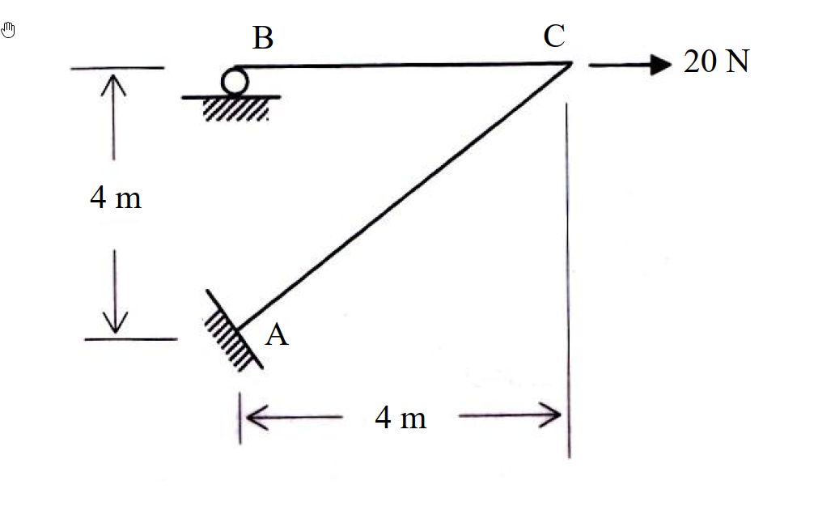
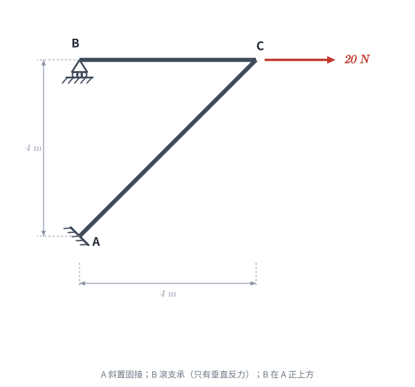
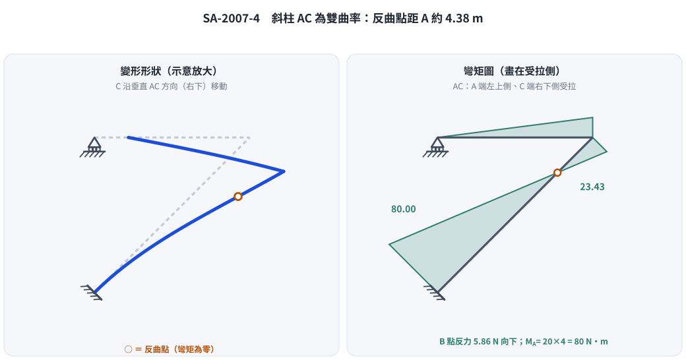

📄 題目正本（考卷原文、附圖與判讀清單；不含解法）
SA-2007-4 題目正本
本檔只記錄考卷上寫了什麼、圖上畫了什麼，不含任何解法。解析見同資料夾
SA-2007-4.md。
判讀清單經使用者確認前，狀態為「待確認」；確認後本檔原則上不再修改（改動須回考卷原圖並記 log）。
| 項目 | 內容 |
|---|---|
| 考卷 | raw/exams/SA-2007_結構學.pdf，第 2 頁下半，第四題 |
| 考年 | 2007（民國 96 年）專技高考結構工程技師「結構學」 |
| 配分 | 25 分 |
| 附圖 | SA-2007-4-fig-1.png |
| 判讀狀態 | 已確認（2026-11-04 使用者確認；影響答案項目定案：#5 B 在 A 正上方（使用者確認）。原轉錄：2026-11-04 轉錄；PyMuPDF 150 dpi 整頁＋350–500 dpi 局部放大；盲讀於開啟解析前完成） |
1. 考卷原文（逐字）
四、如圖所示之剛架（frame）系統，其構架高及跨距均為 4 m，B 點為滾支承（roller），A 點為固接（fixed）。若每根桿件之彈性模數 E 與慣性矩 I 為常數，則當 C 點有一水平載重 20 N 時，請以傾角變位法（slop-deflection method）分析此剛架，並繪製其剪力圖及彎矩圖。（若以他法計算，則不予以計分）（25 分）
2. 考卷給的公式、附表與參數
- 考卷沒有給任何參考公式或附表；所需公式須自備。
- 卷首注意事項：㈠可以使用電子計算器。㈡不必抄題，作答時請將試題題號及答案依照順序寫在試卷上，於本試題上作答者，不予計分。
- 考試時間：2 小時。
3. 附圖

證據圖 SA-2007-4-fig-1.png
圖面文字照錄：B、C、20 N、4 m、A、4 m
4. 判讀清單
| # | 項目 | 判讀 | 圖上／題文依據 | 把握 |
|---|---|---|---|---|
| 1 | A | 斜置固接 | 斜線填充（400 dpi） | 確定 |
| 2 | B | 滾支承於水平面（僅垂直反力） | 圓形滾輪壓在水平線上 | 確定 |
| 3 | C | AC 與 BC 剛接 | 交點無鉸圈 | 確定 |
| 4 | 幾何 | A→C 水平 4 m、垂直 4 m，AC = 4√2 m | 尺寸線 4 m、4 m | 確定 |
| 5 | B 水平位置 | 在 A 正上方，BC = 4 m | 圖面量測：B 滾輪中心與 A 端點 x 座標相同；考卷未標尺寸 | 確定（解讀）；使用者確認 |
| 6 | E、I | 常數 | 題文 | 確定 |
| 7 | 載重 | C 點水平 20 N 向右 | 箭頭 | 確定 |
| 8 | 指定方法 | 傾角變位法（他法不計分） | 題文；「slop-deflection」照考卷原文 | 確定 |
| 9 | 所求 | 分析剛架並繪剪力圖、彎矩圖 | 題文 | 確定 |
轉錄：2026-11-04（SA-U2-3 題目正本推廣・批 1；判讀沿用同日盲解稽核紀錄 wiki/queries/盲解紀錄-SA-U2-3a-2026-11-04.md，並回考卷原圖核對）
確認：2026-11-04 使用者確認
考題編號：[SA-2007-4]
主分類： SA-U2-3 靜不定結構之傾角變位法
副分類： 無
分析法： 傾角變位法
標籤： 有側移剛架 虛功原理 側移方程式
1. 題目（考卷原文見題目正本）
考卷原文、公式／附表、附圖與判讀清單（已確認）見
SA-2007-4-problem.md。本節只列解題時最容易讀錯的地方與本解使用的記號；題意以題目正本為準。

重繪自考卷附圖，依判讀清單 #1–#7 重繪。攔：B 的水平位置、A 支承方向誤讀。
常見誤讀
| 項目 | 正確判讀 | 常見誤讀 |
|---|---|---|
| B 水平位置 | A 正上方，BC = 4 m（使用者確認） | 未定位置 |
| AC 彎矩圖 | 雙曲率，反曲點距 A 4.38 m | 兩端同為逆時針便畫在同側、無反曲點（本題舊版解析） |
| 側移虛功式 | $\sum M\,\delta\psi + P\,\delta\Delta = 0$ | 外功＝內功，再臨場改號（本題舊版解析） |
本解記號： 桿端彎矩、節點轉角、弦位角一律順時針為正（傾角變位法慣例）。
2. 考題核心精神與出題者意圖 (Core Concepts & Examiner's Intent)
- 側移幾何關係的推導： 這是一題非常經典的「有側移」剛架。由於包含斜桿 AC 與水平滾支承 B，當 C 點受水平力向右移動時，AC 桿與 BC 桿皆會發生弦旋轉 (chord rotation)。考驗考生能否精確利用「軸向剛性」假設，畫出位移幾何關係並求出各桿的側移角 $\psi$。
- 傾角變位法與虛功原理的結合： 求出側移角關係後，需要建立一個額外的「側移平衡方程式 (Sway Equation)」。在有斜桿的系統中，單純使用靜力平衡 $\sum H = 0$ 較易出錯，最穩當且強大的方法是運用「虛功原理」建立方程式。
- 剛架剪力與彎矩圖繪製： 考驗求得端彎矩後，如何倒推各桿剪力，並繪製符合結構變形慣例的剪力圖與彎矩圖。
3. 解題戰略地圖與陷阱分析 (Strategic Roadmap & Trap Analysis)
- 戰略一：分析側移機制並設定剛體旋轉角
- 給定 C 點一向右虛位移 $\Delta$。
- 由 BC 桿軸向剛性推得 B 點亦向右位移 $\Delta$。
- 由 AC 桿軸向剛性推得 C 點必須同時向下位移 $\Delta$。
- 分別計算 BC 與 AC 的弦旋轉角 $\psi_{BC}$ 與 $\psi_{AC}$，發現兩者均為順時針 $\Delta/4$。令其為 $R$。
- 戰略二：建立傾角變位方程式與節點平衡
- 列出 $M_{BC}, M_{CB}, M_{AC}, M_{CA}$ 的標準傾角變位式 (無跨度載重故 $FEM=0$)。
- 利用節點 B、C 的力矩平衡 $\sum M = 0$，將 $\theta_B$ 消去，並將 $\theta_C$ 表達為 $R$ 的函數。
- 戰略三：虛功法建立側移方程式
- 每根桿件作剛體虛位移時，作用其上的力虛功總和為零。
- 外力 $20\text{ N}$ 作功 $20\,\delta\Delta$；桿端彎矩（作用在桿上、順時針為正）隨桿件轉 $\delta\psi$ 作功 $(M_{ij}+M_{ji})\,\delta\psi_{ij}$。
- 導出側移方程式 $\sum (M_{ij} + M_{ji})\,\delta\psi_{ij} + P\,\delta\Delta = 0$。
- 陷阱分析：
- 陷阱 1 (側移關係誤判)： 若未能準確利用變形相容條件 (垂直於桿件方向才有相對位移)，會導致 $\psi_{AC}$ 與 $\psi_{BC}$ 比例錯誤，後續方程式將全盤崩潰。
- 陷阱 2 (虛功符號錯誤)： 把桿端彎矩想成「抗拒變形、作負功」再自己加負號，很容易加兩次。最安全的寫法是把桿件當剛體、把桿端彎矩當外力：$P\,\delta\Delta + \sum (M_{ij}+M_{ji})\,\delta\psi_{ij} = 0$，$M$ 與 $\psi$ 同採順時針為正。
- 陷阱 3 (靜力推導方向錯亂)： 許多考生會試圖用切面求層剪力，但由於 AC 是斜桿，需要處理複雜的分力關係，極易出錯。虛功法是唯一救贖。
3.5 變數層次分析 (Variable Hierarchy Analysis)
最終目標
求得結構各桿端彎矩，並繪製對應之剪力與彎矩圖
本題關鍵公式（依計算順序）
-
變形幾何與弦旋轉角：
$\psi = \frac{\Delta_{\text{transverse}}}{L}$ -
傾角變位方程式：
$M_{ij} = \frac{2EI}{L} (2\theta_i + \theta_j - 3\boxed{\psi})$ -
節點力矩平衡：
$\sum M_{\text{joint}} = 0$ -
虛功法側移方程式：
$P \cdot \delta\Delta + \sum (M_{ij}+M_{ji})\,\delta\psi_{ij} = 0$
L1：題目直接給定
| 符號 | 數值 | 說明 |
|---|---|---|
| $L_{BC}$ | $4 \text{ m}$ | 水平桿長度 |
| $L_{AC}$ | $4\sqrt{2} \text{ m}$ | 對角桿長度 |
| $P$ | $20 \text{ N}$ | C 點水平載重 (向右) |
| $EI$ | 常數 | 各桿件抗彎勁度 |
L2：需知識點推導
側移變形幾何
| 符號 | 公式／來源 | 卡關? |
|---|---|---|
| $u_C, v_C$ | $\Delta, -\Delta$ (由軸向剛性推導) | |
| $\psi_{BC}$ | $\frac{v_C - v_B}{L_{BC}} = \frac{-\Delta}{4}$ (相對於幾何，實為順時針 $\Delta/4$) | |
| $\psi_{AC}$ | $\frac{\text{垂直於 AC 之位移}}{L_{AC}} = \frac{\sqrt{2}\Delta}{4\sqrt{2}} = \frac{\Delta}{4}$ (順時針) | |
節點平衡關係
| 符號 | 公式／來源 | 卡關? |
|---|---|---|
| $\theta_B$ | 由 $M_{BC} = 0 \implies \theta_B = 1.5R - 0.5\theta_C$ | |
| $\theta_C$ | 由 $M_{CB} + M_{CA} = 0 \implies 3(\sqrt{2}-1)R$ | |
L3：深層知識（不懂就卡住）
| 知識點 | 說明 | 卡關? |
|---|---|---|
| 剛架虛功原理 | $20\delta\Delta + (M_{BC}+M_{CB})\,\delta\psi_{BC} + (M_{AC}+M_{CA})\,\delta\psi_{AC} = 0$，藉此解出 $M_{AC}=-80$ | |
| 桿端彎矩 → 梁彎矩 | 以桿軸 $i\to j$ 為梁，$M(i)=M_{ij}$、$M(j)=-M_{ji}$（順時針為正的桿端彎矩換成正彎矩下側受拉）；兩端異號才是雙曲率 |
4. 步驟化詳細計算過程 (Step-by-Step Detailed Calculation)
Step 1: 分析剛架側移幾何
設節點 C 向右位移 $\Delta$ ($u_C = \Delta$)。
- BC 桿： 軸向剛性 $\implies u_B = u_C = \Delta$。已知 B 為滾支承限制垂直位移，故 $v_B = 0$。
- AC 桿： C 點相對於 A(固接點) 之位移必須垂直於 AC 軸線，以維持長度不變。AC 斜率為 1 (角度 $45^\circ$)，其法線方向為 $-45^\circ$。位移向量需為 $(\Delta, -\Delta)$。故 $v_C = -\Delta$。
- 弦旋轉角 (順時針為正)：
BC 桿相對兩端垂直位移：右端 C 相對於左端 B 向下 $\Delta$。
$\implies \psi_{BC} = \frac{\Delta}{4}$ (順時針)
AC 桿兩端相對垂直於桿件位移：C 點位移向量 $(\Delta, -\Delta)$ 在法線 $(-45^\circ)$ 上之投影為 $\sqrt{2}\Delta$。
$\implies \psi_{AC} = \frac{\sqrt{2}\Delta}{4\sqrt{2}} = \frac{\Delta}{4}$ (順時針)
令 $\boxed{R = \psi_{BC} = \psi_{AC} = \frac{\Delta}{4}}$。
Step 2: 建立傾角變位方程式
已知 $\theta_A = 0$ (固定端)，且無跨度載重 ($FEM=0$)。
- $M_{BC} = \frac{2EI}{4} (2\theta_B + \theta_C - 3R) = 0.5 EI (2\theta_B + \theta_C - 3R)$
- $M_{CB} = \frac{2EI}{4} (2\theta_C + \theta_B - 3R) = 0.5 EI (2\theta_C + \theta_B - 3R)$
- $M_{AC} = \frac{2EI}{4\sqrt{2}} (\theta_C - 3R) = \frac{\sqrt{2}EI}{4} (\theta_C - 3R)$
- $M_{CA} = \frac{2EI}{4\sqrt{2}} (2\theta_C - 3R) = \frac{\sqrt{2}EI}{4} (2\theta_C - 3R)$
Step 3: 節點平衡與關係簡化
- 節點 B 平衡 (滾支承鉸接)：
$\sum M_B = 0 \implies M_{BC} = 0 \implies 2\theta_B + \theta_C - 3R = 0 \implies \boxed{\theta_B = 1.5R - 0.5\theta_C}$
代回 $M_{CB}$：
$M_{CB} = 0.5EI \left( 2\theta_C + (1.5R - 0.5\theta_C) - 3R \right) = \boxed{\frac{3EI}{4} (\theta_C - R)}$ - 節點 C 平衡：
$\sum M_C = 0 \implies M_{CB} + M_{CA} = 0$
$\frac{3EI}{4} (\theta_C - R) + \frac{\sqrt{2}EI}{4} (2\theta_C - 3R) = 0$
同乘 $4/EI$：
$3(\theta_C - R) + \sqrt{2}(2\theta_C - 3R) = 0$
$(3 + 2\sqrt{2})\theta_C = (3 + 3\sqrt{2})R \implies \theta_C = \frac{3+3\sqrt{2}}{3+2\sqrt{2}} R = \boxed{3(\sqrt{2}-1)R}$
Step 4: 虛功法建立側移平衡方程式
策略註解：施加一符合機制之虛位移 $\delta\Delta$（C 向右），把每根桿件當剛體。
外力 $20\text{ N}$ 在 C 點作正功：$20\,\delta\Delta$
桿端彎矩作用在桿件上（順時針為正），桿件順時針轉 $\delta\psi$，作功 $(M_{ij}+M_{ji})\,\delta\psi_{ij}$；其中 $\delta\psi_{BC} = \delta\psi_{AC} = \frac{\delta\Delta}{4}$
剛體虛位移，總虛功為零：
$$20\,\delta\Delta + (M_{BC} + M_{CB} + M_{AC} + M_{CA}) \frac{\delta\Delta}{4} = 0$$
同乘 $\frac{4}{\delta\Delta}$：
$$\boxed{M_{BC} + M_{CB} + M_{AC} + M_{CA} = -80}$$
Step 5: 求解與代回
將節點平衡條件 $M_{BC} = 0$ 及 $M_{CB} + M_{CA} = 0$ 代入側移方程式：
$$0 + (M_{CB} + M_{CA}) + M_{AC} = -80 \implies \boxed{M_{AC} = -80 \text{ N-m}}\ (\text{逆時針})$$
由傾角變位式：
$$M_{AC} = \frac{\sqrt{2}EI}{4}(\theta_C - 3R) = \frac{\sqrt{2}EI}{4}(3\sqrt{2}R - 3R - 3R) = \frac{3(1-\sqrt{2})EI}{2} R$$
求解 $R$：
$$-80 = \frac{3(1-\sqrt{2})EI}{2} R \implies R = \frac{-160}{3(1-\sqrt{2})EI} = \frac{160(\sqrt{2}+1)}{3EI}\ (>0，C\text{ 確實向右下移})$$
代回求解其餘彎矩：
- $M_{CB} = \frac{3EI}{4} (3\sqrt{2} - 4) R = \frac{3}{4} (3\sqrt{2}-4) \frac{160(\sqrt{2}+1)}{3} = 40(6+3\sqrt{2}-4\sqrt{2}-4) = \boxed{80 - 40\sqrt{2} \approx 23.43 \text{ N-m}}$
- $M_{CA} = -M_{CB} = \boxed{40\sqrt{2} - 80 \approx -23.43 \text{ N-m}}$
- $M_{BC} = 0$
Step 6: 支承反力與桿件剪力
- BC 桿：$V_{BC} = \frac{M_{BC}+M_{CB}}{4} = \frac{23.43}{4} = 5.86\text{ N}$ → B 點垂直反力 $B_y = 5.86\text{ N}$ 向下（滾支承受拉）
- A 點：$A_x = 20\text{ N}$（向左）、$A_y = 5.86\text{ N}$（向上）、$M_A = 80\text{ N-m}$（逆時針）
- AC 桿垂直桿軸的剪力：$V_{AC} = \frac{|M_{AC}| + |M_{CA}|}{4\sqrt{2}} = \frac{80 + 23.43}{4\sqrt{2}} = 18.28\text{ N}$（全桿常數）
- 檢核：A、B 兩點的垂直反力大小相等、方向相反，與水平力 20 N 形成平衡；B 在 A 正上方，對 A 取矩 $M_A = 20 \times 4 = 80$，與 $B_y$ 無關 ✓
5. 關鍵爭議點與進階探討 (Critical Issues & Advanced Discussion)

圖解：左：C 沿垂直 AC 方向（右下）移動；右：AC 兩端梁彎矩異號，反曲點距 A 約 4.38 m。攔：把兩端同為逆時針的桿端彎矩畫成同側。
- 靜力平衡驗證： 本題若直接以全靜力平衡求解，亦可證明結果無誤。因 $B_x=0$，可知 $A_x=-20$ (向左)。B 在 A 正上方，對 B 取力矩 $\sum M_B = 0 \implies M_A + A_x(4) = 0 \implies M_A = 80$ (逆時針)，故桿端彎矩 $M_{AC} = -80\text{ N-m}$。此捷徑能秒殺虛功法的繁瑣推導，但題目限用傾角變位法，答題仍應完整寫出側移方程式，並可用此式作為檢核。
- 剪力與彎矩圖繪製重點：
- BC 桿： 常數剪力 $5.86\text{ N}$。彎矩由 B 端 $0$ 線性變化至 C 端 $23.43\text{ N-m}$，上側受拉（BMD 畫在上方）。
- AC 桿： 常數剪力 $18.28\text{ N}$。以 A→C 為梁軸換成梁彎矩：A 端 $M(A)=M_{AC}=-80\text{ N-m}$（左上側受拉），C 端 $M(C)=-M_{CA}=+23.43\text{ N-m}$（右下側受拉）。兩端異號 → 雙曲率，彎矩線性變化並在距 A 點
$$x_0 = \frac{80}{80+23.43} \times 4\sqrt{2} = 4.38\text{ m}$$
處穿過零點（反曲點，約在 AC 全長的 77%）。 - C 節點： BC 上側與 AC 右下側都是角隅外側，兩桿在 C 點同為外側受拉、彎矩 23.43 N-m 連續轉過角隅 ✓
- 符號提醒： 兩個桿端彎矩同為「逆時針」（$M_{AC}$、$M_{CA}$ 皆為負）恰好表示梁彎矩兩端異號，不是同側；若 BMD 畫成同側，剪力就只有 $(80-23.43)/4\sqrt{2}=10.0\text{ N}$，與桿端彎矩算出的 18.28 N 矛盾。
修正日期：2026-11-04（數值未變。① §5 彎矩圖：AC 桿原寫「兩端皆為負彎矩、BMD 同側、無反曲點」，更正為雙曲率、距 A 4.38 m 有反曲點，剪力式由 (80−23.43)/4√2 更正為 (80+23.43)/4√2；② Step 4–5 側移虛功式改為 $\sum M\delta\psi + P\delta\Delta = 0$ 直接得 −80，刪除臨場改號的草稿文字，§3、§3.5 同步；③ §1 刪除「題目未附圖」註記，改依考卷附圖判讀並補附圖連結；新增 Step 6 反力。驗證：平面剛架勁度法（EA→∞）重算端彎矩、剪力、反力與反曲點位置，MISMATCHES: 0；來源：wiki/queries/盲解比對-SA-U2-3a-2026-11-04.md）
修正日期：2026-11-04（§1 改為指向題目正本並放重繪附圖（figs/SA-2007-4-fig-1-problem.svg）、加常見誤讀；§5 補解題圖解 figs/SA-2007-4-fig-2-deflected-bmd.svg；圖由 gen_SA-2007-4.py 產生，可重跑）